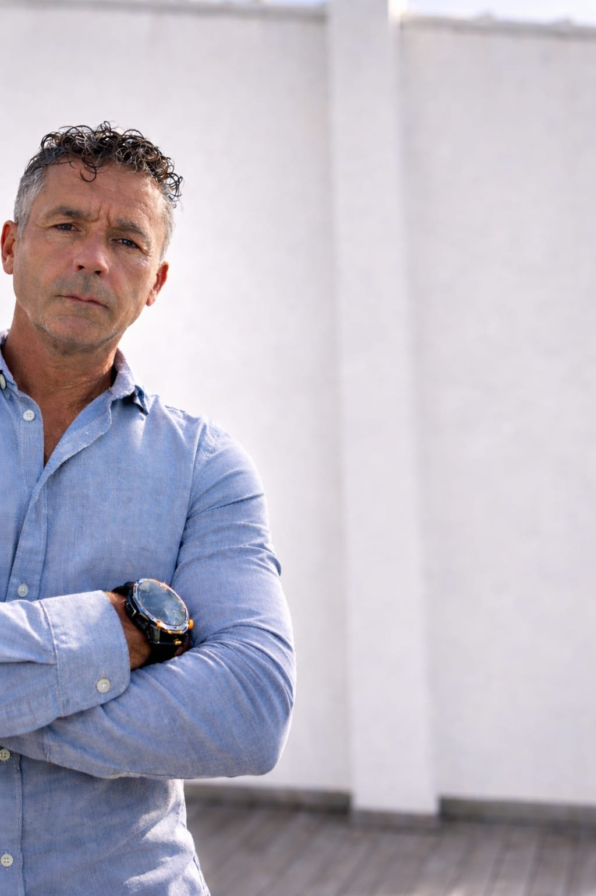

Una misma visión, cuatro
formas de cuidarte
Julio Ribes conecta el cuerpo, el movimiento y los hábitos cotidianos desde una visión integral de la salud.

Del tratamiento a la divulgación
Julio Ribes desarrolla su trabajo desde una visión que conecta el cuerpo, el movimiento y los hábitos cotidianos. Su actividad reúne la atención presencial en el centro, la divulgación a través de Optimización Circadiana y la escritura de la colección Salud Integral y Ciencia.
Todo forma parte de lo mismo
Cuatro facetas que se sostienen entre sí y comparten un objetivo: entender el cuerpo para cuidarlo mejor.
- 01
Osteopatía
Un abordaje manual que busca comprender y tratar el origen de lo que sientes.
- 02
Movimiento
El Pilates y el cuerpo en movimiento como parte esencial del bienestar.
- 03
Divulgación
Optimización Circadiana: compartir conocimiento sobre luz, sueño y hábitos.
- 04
Escritura
La colección Salud Integral y Ciencia, para profundizar en la salud.